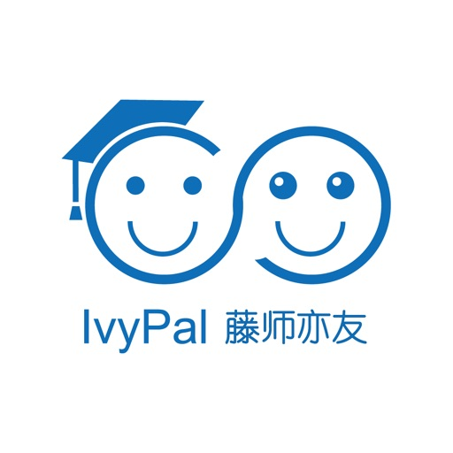
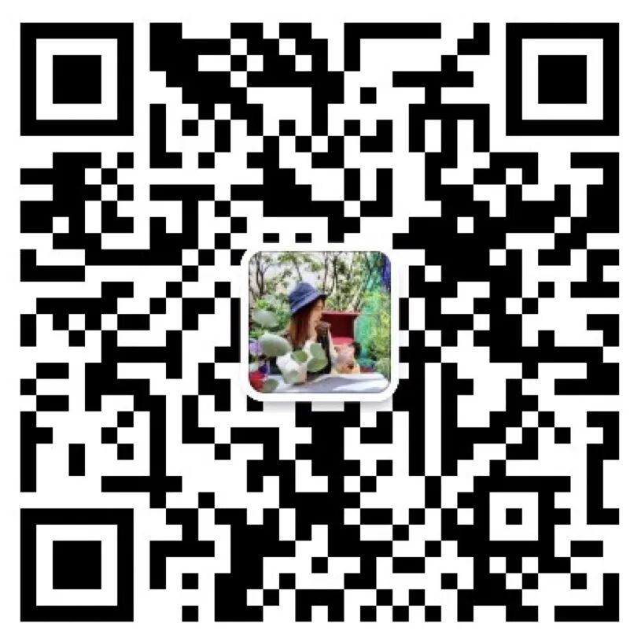
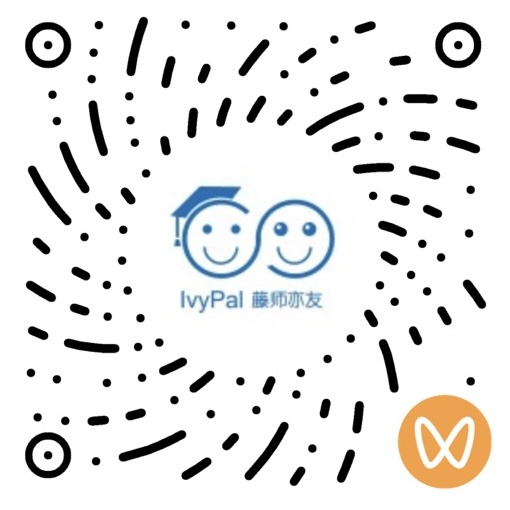

CONVERSATION
让表达更自然
把英语放进交流，围绕感兴趣的话题，尝试提问、回应，讲述自己的想法。

IvyPal藤师亦友IVYPAL · ENGLISH & BEYOND
在交流中发现兴趣，在表达中建立自信。
与外教一起，让英语走进真实的对话。
A teacher. A friend. A wider world.
01 / THE IVYPAL IDEA
IvyPal 藤师亦友专注英语学习。我们希望，老师既是语言学习的引导者，也是让学生愿意交流、乐于探索的伙伴。
学会用英语讲述自己的想法，也用英语认识不同的生活与文化。让每一次对话，都成为理解世界的新起点。
02 / ENGLISH & BEYOND
从听懂一句话，到表达一个观点。
带着好奇心，走向更开阔的世界。
CONVERSATION
把英语放进交流，围绕感兴趣的话题，尝试提问、回应，讲述自己的想法。
CURIOSITY
从一个问题开始，去阅读、去了解、去讨论，让语言成为探索的工具。
CONNECTION
遇见不同的观点与文化，在交流中学习理解，也找到属于自己的声音。
“亦师亦友”
03 / LET’S CONNECT
打开微信，搜索下方名称。
了解品牌动态，咨询适合孩子的英语学习安排。
备注“英语学习”，了解课程与学习安排。

微信扫码，关注视频号

课程设置与具体安排，请通过工作微信向品牌咨询。